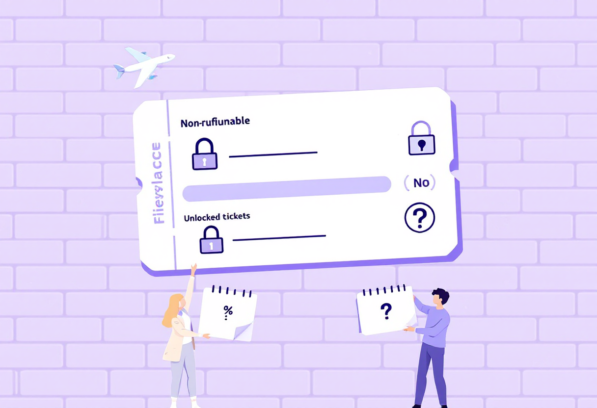

Квитки: як обрати і не переплатити
Кілька простих правил допоможуть знайти вигідний квиток і уникнути неприємних сюрпризів під час подорожі.

Де шукати квитки
Порівнюй ціни на кількох сервісах, а перед оплатою перевіряй вартість на сайті авіакомпанії.
Корисні сервіси:
- Google Flights;
- Skyscanner;
- Momondo;
- Kayak;
- офіційні сайти авіакомпаній.
Іноді найдешевший варіант в агрегаторі виявляється дорожчим після додавання багажу та інших послуг.

На що звернути увагу перед купівлею
Низька ціна не завжди означає вигідну покупку.
Перевір:
- чи входить багаж у вартість;
- розміри ручної поклажі;
- умови повернення або зміни квитка;
- аеропорт вильоту та прильоту;
- тривалість пересадок.
Для українців також важливо враховувати вартість дороги до аеропорту в іншій країні.

Лоукостери: що потрібно знати
Лоукостери часто пропонують дуже дешеві квитки, але більшість додаткових послуг оплачуються окремо.
Зазвичай доплачувати доводиться за:
- великий багаж;
- вибір місця;
- пріоритетну посадку;
- реєстрацію в аеропорту.
Перед оплатою перевір остаточну вартість замовлення.

Безпечна купівля
Щоб уникнути проблем:
- купуй квитки через відомі сервіси або напряму в авіакомпанії;
- уважно перевіряй ім'я та прізвище перед оплатою;
- зберігай маршрут-квитанцію та підтвердження бронювання;
- використовуй банківську картку для оплати, а не перекази на особисті рахунки.

Якщо плани можуть змінитися
Найдешевші квитки зазвичай не підлягають поверненню.
Якщо поїздка не остаточно підтверджена:
- перевір умови повернення;
- дізнайся вартість зміни дати;
- розглянь страхування подорожі.